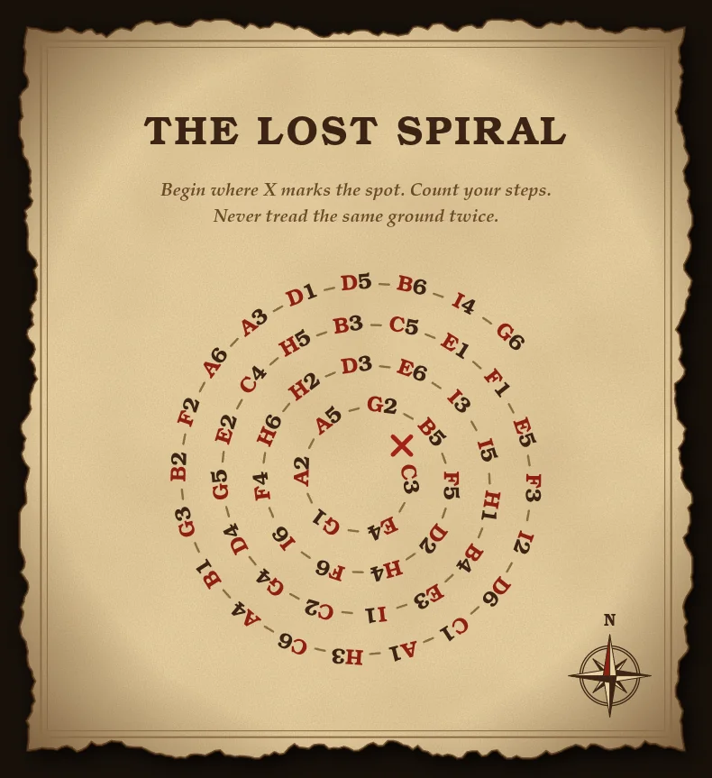

The Lost Spiral — solved
A spiral of 54 coordinates and a 9×6 grid, both posted to r/codes by u/ViezeVingertjes and both built on the same hop-counting pointer cipher. Reproduced and verified in this folder.
- The Lost Spiral — r/codes,
…/comments/1y15s46/the_lost_spiral_or_isnt_it/. The spiral image (copy: lost-spiral.png). - Thank god its friday! — r/codes,
…/comments/1wjxj5u/thank_god_its_friday/. The 9×6 grid, with the comment by u/Parking_Witness1832 that gives the method (saved copy: PDF).

1. The Friday-thread cipher
Source: “Thank god its friday!” by u/ViezeVingertjes on r/codes (saved copy as PDF), flagged Unsolved. The post is just this grid and the line V sbyybjrq gur ehyrf!, which is ROT13 for “I followed the rules!”. I re-checked my transcription against a render of the PDF page.
The rules, as given by Parking_Witness1832
- Start at A1. It says H3, so count forward to H3 “like a book”. H3 is the 26th cell in reading order, so it is 25 hops away, and the 25th letter is Y.
- Each hop adds one to the letter. The count is the letter: 15 → O, 21 → U.
- Skip cells you have already visited (they cross them out on a whiteboard), including A1 itself.
- Keep going from the cell you just reached, using the pointer stored there.
Two details their comment leaves open turned out to be pinned down by the output:
- Wrap-around. Hop 3 goes from E5 to I1, which is “behind” it in book order, so counting continues past I6 into A1 and onwards: 21 hops, i.e. U.
- 27 is a space, not “A”. Hops of exactly 27 appear after YOU, HAVE, FOUND, THE and SECRET. They are the word gaps; a 27-symbol alphabet (A–Z plus space) explains every “a” in the commenter's result.
- The gibberish the commenter hit afterwards is padding (see §3). The message ends after the 26th hop.
Step through it
2. Identifying the scheme in the spiral

Original image, from “The Lost Spiral” by u/ViezeVingertjes on r/codes. The subtitle reads: “Begin where X marks the spot. Count your steps. Never tread the same ground twice.”
Reading the spiral
- 54 labels, each a red letter A–I and a black digit 1–6 (colour is decoration: all 54 are red-letter + black-digit). All 54 are different, so they are exactly the 54 cells of a 9×6 grid.
- The order comes from following the dashed connectors out from the X (they form a single path with two ends). The sequence is unrolled into the grid further down.
- Because every cell occurs exactly once, the only information is the order, which is also true of the Friday grid when read as a pointer table.
The mapping that makes it click
- Spiral node k is the pointer stored in cell k of the grid in book order (node 1 = A1, node 2 = B1 … node 54 = I6): the spiral is the same grid flattened along a path starting at the X.
- That grid's pointers form one 54-cycle (a random permutation does that only 1 time in 54). Filled column-major the loop closes after 9 cells; read inward it closes after 36. Only the book-order, outward reading gives the loop the Friday-thread commenters noticed.
- Using it directly on the spiral. Node 1 (at the X) carries the label C3. Cell C3 is position (3−1)×9+3 = 21 in reading order, i.e. spiral node 21, so walk 20 steps along the spiral → T. Node 21 carries B4 = node 29; 8 steps further, skipping the two nodes already trodden → H, and so on.
- The subtitle is the rule set: begin where X marks the spot = start at the first node (A1); count your steps = the hop counts; never tread the same ground twice = skip cells already crossed out.
The spiral unrolled into the 9×6 grid
Row 1 is nodes 1–9, row 2 is nodes 10–18, and so on. The header letters and digits are the cell names and each box holds the pointer stored there, exactly as in the Friday post.
Step through the spiral
Left: the spiral redrawn at its real node positions, with the X at the centre. Right: the same state on the grid. Gold boxes and red numbers are the cells counted for the current hop; the red-outlined one is the destination.
Result
Counting the hops gives 20, 8, 1, 14, 11, 27, 7, 15, 4, 27, 9, 20, 19, 27, 6, 18, 9, 4, 1, 25 → T H A N K ␣ G O D ␣ I T S ␣ F R I D A Y. The next hop (4 = D) starts the padding. The plaintext repeats the title of the same author's other post, “Thank god its friday!”.
3. Checks
- Round trip. An independent encoder (
hopcipher.encode) rebuilds both pointer grids exactly from their hop counts, and each loop closes back at A1 after all 54 cells. - Alphabet bound. Every hop in both messages is ≤ 27. Random hops in this grid would reach up to 53 early on (my first, wrong, attempt, which read the spiral as the visited path, produced 29 and 31).
- English, not noise. 20 and 26 consecutive hops decode to clean words with the same spaces convention in both puzzles.
- Padding. After the message, every hop stays inside the legal range 1…(cells left), as required. The hop sums sit at z = (Friday) and z = (spiral) relative to uniform random draws, so they look like random fill. I found no second message in them.
Variants that fail
| Variant | First 22 symbols | Outcome |
|---|
Not crossing out the start cell shifts the first wrap-around hop by one (Friday breaks at hop 3, the spiral at hop 5), which confirms rule 3.
All hops
Friday thread: 53 hops
Spiral: 53 hops
4. Decode / encode tool
5. Notes and caveats
- Trailing space. The Friday plaintext ends with a 27 after SECRET. It is probably the same “word separator” the encoder puts between words, but I can't tell whether it is meant. The spiral message has none.
- Padding is not decoded. The tails (
and) are the free hops the encoder needs to close the loop through the remaining cells. Nothing I tried reads as a message. - Inference vs. proof. “Spiral node k = cell k” is an inference. It is confirmed by three independent signals: a single 54-cycle (1/54 by chance), clean English from the first hop, and the exact round trip.
- Sources and what I read. I worked from the spiral image and from the saved PDF of the Friday thread (post and comments). I did not read the spiral thread's own page or comments (link), so nothing here relies on what is said there. Both posts are credited to u/ViezeVingertjes as the author.
- Not read: the OP cipher whose hints Parking_Witness1832 mentions (
reddit.com/r/codes/s/fYm5W7Cr2C). It wasn't needed. - Files.
hopcipher.py(algorithm + data),verify.py(checks above),build_report.py+template.html(this page),spiral_coords.json(traced node positions),lost-spiral.png(the puzzle).